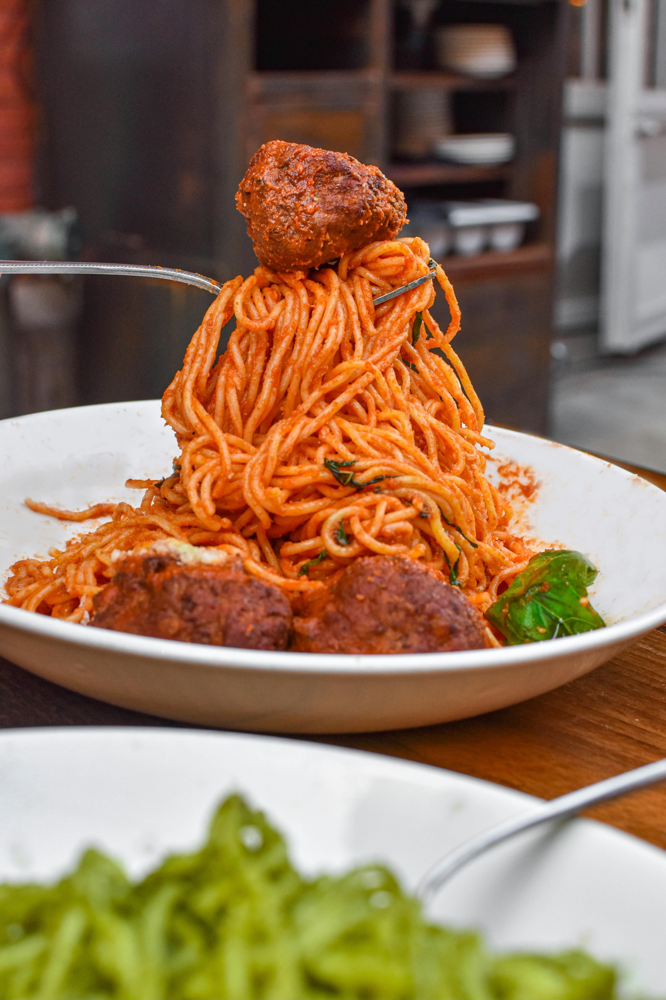

Spaghetti and Meatballs

Spaghetti and meatballs is a classic Italian-American dish that is loved by many. It consists of spaghetti noodles topped with a rich tomato sauce and savory meatballs. It is a comforting and satisfying meal that is perfect for a family dinner or a cozy night in.
Ingredients
- Spaghetti Noodles
- Tomato Sauce
- Ground Beef
- Breadcrumbs
- Eggs
- Garlic
- Onion
- Parmesan Cheese
Steps
- Preheat your oven to 375 degrees.
- Cook the spaghetti noodles according to the package instructions.
- In a large bowl, combine the ground beef, breadcrumbs, eggs, garlic, onion, and Parmesan cheese.
- Form the mixture into meatballs and place them on a baking sheet.
- Bake the meatballs in the